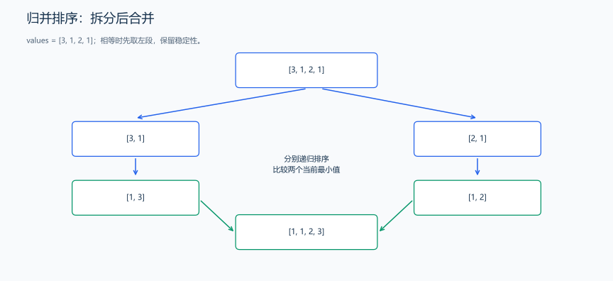
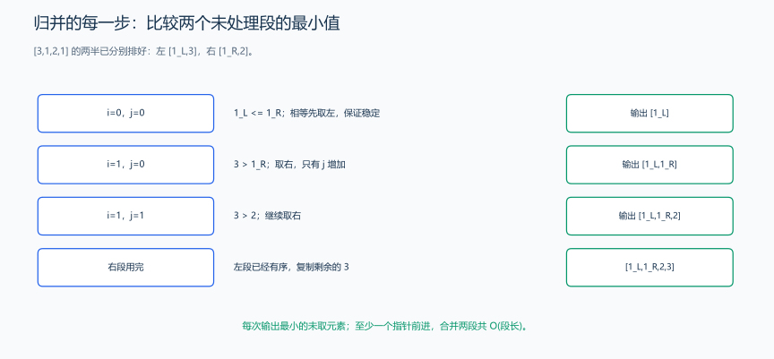
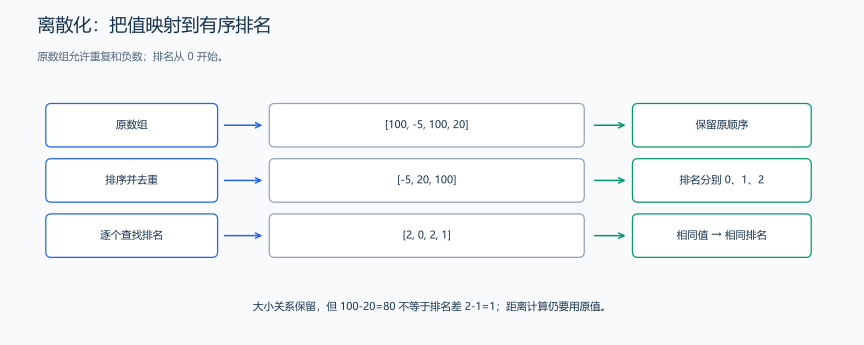

（四） 排序与离散化
前缀和按位置累积，遇到按数值查找、比较大小或给稀疏数值编号时，先建立顺序会更方便。这里继续从 STL 的排序接口追问它如何减少查找工作。
1. 常见排序思路
| 方法 | 思路 | 时间复杂度 | 特点 |
|---|---|---|---|
| 选择排序 | 每轮找剩余元素的最小值 | \(O(n^2)\) | 入门直观，通常不稳定 |
| 插入排序 | 将当前元素插入已有序部分 | 最坏 \(O(n^2)\) | 有序时可达 \(O(n)\)，可稳定实现 |
| 归并排序 | 分成两半排序后合并 | \(O(n \log n)\) | 可稳定实现，常需 \(O(n)\) 辅助空间 |
| 快速排序 | 按枢轴划分后递归 | 平均 \(O(n \log n)\)，最坏 \(O(n^2)\) | 划分策略影响性能 |
竞赛通常直接使用 sort，比较次数为 \(O(n\log n)\)。如果两条同分记录还要保持输入时的先后顺序，就使用 stable_sort，它会保留等价元素的相对顺序。
稳定是指排序键相同的元素，排序后相对顺序不变。vector 使用 sort 按位置移动元素；list 使用成员 list::sort() 调整链表中的节点连接。
练习题： 洛谷 P1177 — 排序。
2. 归并排序模板
下面使用半开区间 [left, right)：
题目原文（自拟）： 给定整数数组，将元素按非递减顺序排列，保留所有重复元素。用归并排序实现。
分析： 把区间拆成两半，递归排序，再按两段的当前最小值合并。区间长度为 0 或 1 时已经有序。

两段排好序后，只比较各自尚未取出的第一个值；相等时先取左段。

样例 [3,1,2,1] 的两半排好后为 [1左,3] 与 [1右,2]。第一轮相等，按代码先取左侧 1；随后依次比较 3 与 1、3 与 2，取右侧的 1、2；右段耗尽，复制左段剩余的 3。左右标签只用于追踪相等元素来源，最终输出仍是 [1,1,2,3]，相等时先取左段使归并保持稳定。
合并为什么只看两段的第一个剩余元素？ 两段内部已经有序，所以各自的第一个剩余元素都是该段剩余部分的最小值。比较这两个值，把较小者写入 temp，它就一定是全部剩余元素中的最小值。重复这一步，已写部分始终有序，且不会漏掉元素。
对 [3,1,2,1]，左右分别排成 [1,3] 和 [1,2]。合并时先取左边的 1，再取右边的 1，然后取 2，最后补上 3。相等时先取左段，配合各段内部也保持原相对次序，便得到稳定排序；若只排序整数，稳定性的差别不明显，排序带编号记录时就能看出来。
temp 只作为当前合并结果，完成后要复制回 values[left…right)，因为上层递归合并读取的是 values。长度 0 或 1 的区间不用再拆分，这既是递归终点，也保证最终能够结束。
#include <vector>
using namespace std;
void mergeSort(vector<int> &values, vector<int> &temp, int left, int right) {
if (right - left <= 1) {
return;
}
// 把半开区间拆为两半，分别排序后再合并。
int mid = left + (right - left) / 2;
mergeSort(values, temp, left, mid);
mergeSort(values, temp, mid, right);
// i、j 读取左右有序段，k 写入辅助数组。
int i = left, j = mid, k = left;
while (i < mid && j < right) {
if (values[i] <= values[j]) {
temp[k++] = values[i++]; // 相等时先取左边，保持稳定
} else {
temp[k++] = values[j++];
}
}
while (i < mid) {
temp[k++] = values[i++];
}
while (j < right) {
temp[k++] = values[j++];
}
for (int index = left; index < right; ++index) {
values[index] = temp[index];
}
}调用时先创建同样长度的辅助数组：vector<int> temp(values.size());，再调用 mergeSort(values, temp, 0, static_cast<int>(values.size()));。
归并排序体现“分解、解决子问题、合并”的分治思想。若合并时右侧元素小于当前左侧元素，左侧未取出的 mid - i 个元素都会与它形成逆序对，可以据此扩展为逆序对计数。
样例与解释： [3,1,2,1] 排序后为 [1,1,2,3]；重复的两个 1 都保留。时间 \(O(n\log n)\)，辅助数组空间 \(O(n)\)，递归栈深 \(O(\log n)\)。
练习题： 洛谷 P1908 — 逆序对。
3. 离散化
数据值很大，但我们只关心大小关系时，可以把它们映射成紧凑下标：
题目原文（自拟）： 给定整数数组，将不同值按升序依次编号为 0,1,...，输出原数组每个元素的编号。相同原值必须得到相同编号。
分析： 先在副本中排序去重，再用 lower_bound 找每个值在去重数组中的位置。
保留需要的关系，去掉无用的数值跨度。 [100,-5,100,20] 如果按数值当数组下标，会遇到负数与很大的范围；按值排序去重后只剩 [-5,20,100]，用它们的位置 0、1、2 就能表示大小次序。回到原顺序便得到 [2,0,2,1]。
unique 只把连续相等元素压到前面并返回新的逻辑末尾，不直接缩短容器，所以先排序让相同值相邻，再用 erase 删除尾部。lower_bound 找原值的第一处位置；原值都来自这份副本，所以一定能找到对应排名。
排名之间的差不能当坐标距离：原值 -5 到 20 距离为 25，新排名只差 1。处理区间长度、面积等问题时，需要保留排序后的原坐标，用相邻原坐标的差计算长度。

相同原值映射到相同排名，大小关系保留；排名差不等于原坐标距离。
#include <algorithm>
#include <vector>
using namespace std;
vector<int> compress(const vector<int> &values) {
// 复制后排序去重，得到每种原值对应的有序排名。
vector<int> sorted = values;
sort(sorted.begin(), sorted.end());
sorted.erase(unique(sorted.begin(), sorted.end()), sorted.end());
vector<int> rank;
for (int x : values) {
rank.push_back(
static_cast<int>(lower_bound(sorted.begin(), sorted.end(), x) - sorted.begin()));
}
return rank;
}例：[100, -5, 100, 20] 映射为 [2, 0, 2, 1]。离散化保留大小关系和相等关系，不保留数值差距，不能直接用新下标计算原坐标距离。时间 \(O(n \log n)\)，空间 \(O(n)\)。
练习题： 洛谷 P1496 — 火烧赤壁（排序、区间合并或离散化练习）。